Published April 15, 2026
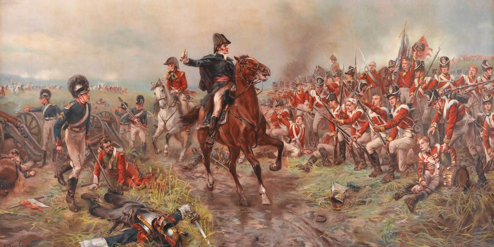
This is a story about how the economy never recovered after the 2008 economic collapse.
And it begins with a man who predicted it all.
His name was William Rees-Mogg and, in 1987, he wrote a book brazenly called Blood in the Streets which shocked everyone. The title is a reference to Nathan Rothschild's principle that "the time to buy is when blood is running in the streets." And the book argued that war, social breakdown and other crises were fantastic opportunities to make a lot of money.
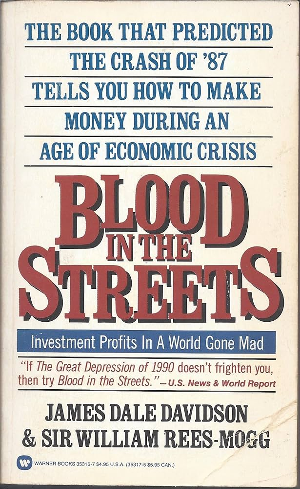
Here was a Catholic intellectual, member of the House of Lords and former editor of The Times arguing that the wealthy should view crises not as generating a moral obligation to use their riches to alleviate suffering and assist their community, but as a rare moment they should seize upon to take even more money from the vulnerable while they are defenceless. And it was to become a powerful vision which inspired several of the most influential individuals responsible for the economy we live in today.
But it was also a prediction about the world to come. His bold prediction of disaster on Wall Street in that book was, he later claimed, borne out by Black Tuesday. In his ensuing bestseller, The Great Reckoning, published just weeks before the coup attempt against Gorbachev, he analysed the pending collapse of the Soviet Union and foretold the civil war in Yugoslavia.
The books followed a simple logic. Powerful forces — technological shifts, demographic changes, the decline of empires — moved through history like tectonic plates, invisible to most people but legible to those willing to think beyond conventional models. And once you could read those forces, you could profit from them. The suffering of nations became, in this worldview, a kind of raw material — input data for a calculation about where to place your money.
On the face of it, this was not a new idea. Financiers had always understood that instability created opportunity. But Rees-Mogg was doing something different. He was building a philosophy — a complete account of how the world worked — in which the individual's highest calling was to correctly predict the outcomes of global catastrophe before everyone else did.
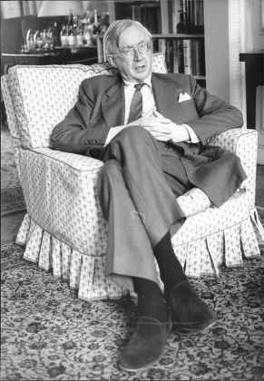
And he links this calling to a story he tells about the British Empire. "Like any good story," he writes, "it has everything: action (a clash of cultres, menacing natives, savage killings)...a colourful cast of characters (including Winston Churchill and a Dervish chief)...strategic implications (a demonstration of the way power is exercised in the world)...and, naturally, money."
The story he tells is part of what made the book so shocking. With disinterested neutrality, Rees-Mogg insists that the explanation for why the British were able to rule over so much of the world was because they had guns, and their enemies didn't: "In one battle near Zimbabwe in 1893, 50 British South African police fought 5,000 Ndebele warriors, killing more than 3,000 in an hour and a half."
In a section titled 'A MILLION DOLLARS OR A MACHINE GUN?' he argues that, "when no one is standing by to protect you, the person who grabs the gun can create his own rules. And he could then grab the million dollars as well." The British knew their economic transactions in the colonies were under threat from locals who resisted their occupation. So it was important they had guns so that no one could grab their million dollars from them: "If such order is enforced, then a million dollars is prefereable to a submachine gun." Notice that, under the same logic, with a gun the Brits could create their own rules and grab the dollars that belong to the locals, as is of course what happened when valuable resources were discovered. This is subtly glossed over by Rees-Mogg.
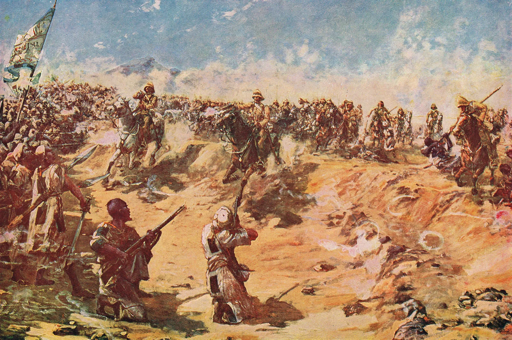
His example is the battle of Omdurman. Lord Kitchener led a command that included a young Winston Churchill, to enter Sudan where they would secure the Upper Nile and protect British economic interests in Egypt from attack by a force of Islamic believers engaged in a jihad. Opposing the British was Abud Allah ibn Muhammed, the Khalifa of the Dervishes, who Rees-Mogg calls "the nearest nineteenth-century equivalent of the Ayatollah Khomeini." On September 2, 1898, 40,000 Dervishes began to howl (their centuries-old tactic of using noise as a psychological weapon in battle) as they charged across the desert to attack the British Camel Corps. The British troops drew back to the Nile where they wouldn't be overwhelmed and a gun boat arrived. At the end of a five hour battle, the British had lost 20 men. The Dervishes lost 11,000.
Rees-Mogg follows this by noting that the 'news had an immediate impact–on the stock market. Share prices rose.' This is the effect of victory in Sudan according to Rees-Mogg. It caused advances in Egyptian stocks and Consols. 11,000 Dervishes killed, for a rise in the stock prices. He goes on to write "Without this power, there would have been no structure in London or anywhere else for investing in far-flung corners of the globe" as if it hasn't occured to him the gains of investing in far-flung corners of the globe is not worth the cost to human life involved in building that structure.
Then he says something even more interesting. "Economies of the world still rest upon the primitve algebra of force. Not because economic transactions themselves are based upon force. Far from it. They are peaceful in character. But they can only proceed where there is peace." This qualification is an intellectual maneuvre which is to crop up time and time again in defending the innocence of economic activity. But it all starts with Rees-Mogg.
By 1997, he had developed his philosophy into its fullest and most radical expression in The Sovereign Individual, which argued that in an internet age the nation state would become outmoded, and an era of the individual would develop. He envisioned the death of industrial society, the end of representative democracy, and its replacement with a "new democracy of choice in the cybermarketplace." The assurances of equality that Western people had taken for granted, he wrote, were "destined to die" with the modern nation state.
And the man who wrote the foreword to this book was Peter Thiel, who set about to implement Rees-Mogg's vision of the world by founding three companies that rule the world today: PayPal, Polymarket and Palentir.
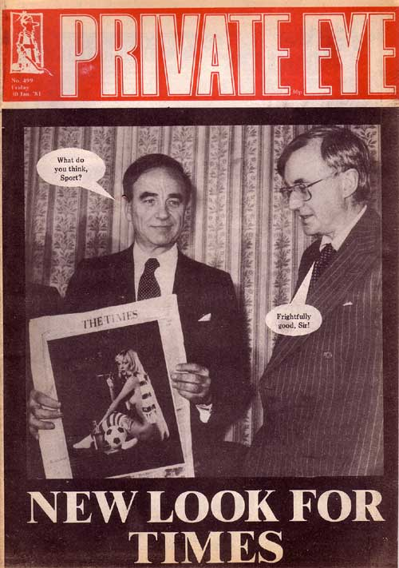
But few others took Rees-Mogg seriously. Private Eye magazine coined the nickname 'Mystic Mogg,' mocking his predictions as the self-serving fantasies of a very old man.
So when in 2008 he warned against the 'quackery' of government economic forecasts such as then-Chancellor Alistair Darling's 2008 projections for a recovery beginning in 2010, no one much listened.
And then when David Cameron was elected in 2010 and cut social services under a tight austerity policy, no one noticed that Rees-Mogg had predicted this in 1997, writing in The Soverign Individual that by roughly 2010, welfare states would become "simply unfinanceable" due to technological and social shifts.
The British establishment since Thatcher had totally absorbed the economic philosophy of Friedrich Hayek, whose book The Road To Serfdom Thatcher took to bed with her each night.
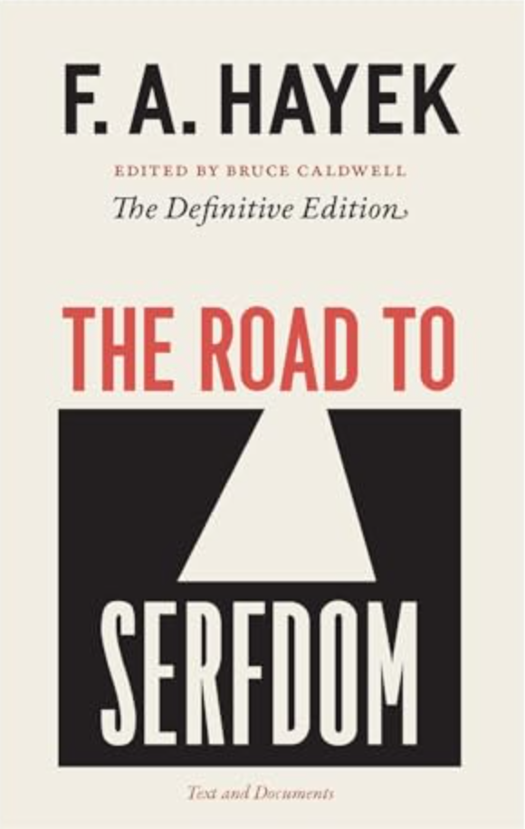
Hayek had envisioned that if you remove government power over markets, this will make the markets more efficient and economic activity will flourish. This was the opposite of what Rees-Mogg was saying. Remove the government power and the economy will collapse entirely. The man with the gun will notice he can just come and grab your million pounds.
~~~~~~~~~~~~~~~~~~~~~
At the same time that The Soverign Individual was being written, a boy called Gary Stevenson was growing up in Ilford, in the East End of London, playing football to the backdrop of the tall new towers at Canary Wharf.
He aspired to be a grime MC. But he had an extraordianry talent for mathematics so, when he was old enough, he enrolled for undergraduate at the London School of Economics.
He arrived at the LSE in 2004, wearing tracksuits and sneakers. There, he learnt about a strange competition called The Trading Game which offered the winner an internship at Citibank, and stopped studying to focus on mastering the game. He'd come to realise that the kids on his course had all come from affluent schools and, as such, they all thought in the same way. They calculated odds with textbook mathematical methods, and this made them predictable: "The kind of person who studies economics at LSE and attends Finance Society events is not smart," he wrote. "They are smart with a calculator. They are good with a spreadsheet."
Gary understood something his competitors did not: that the market is not a maths problem. It's a psychological problem. The price of an asset is a belief, not a calculation. It is a belief about what other people believe. And beliefs can be manipulated. So he set out to play the way he had learnt to play things growing up in Ilford: by watching people, bluffing, getting others to reveal information.
It worked. Garry won the intership to Citibank and became their youngest trader at just 21. Now he was in one of those tall new towers at Canary Wharf. There, he discovered a trading floor full of dysfunctional geniuses and insecure bullies who, somehow, felt like family. What they all shared was an ability to detatch from relity, to treat enormous human events as pure data and feel nothing about the fact that their gains were someone else's losses
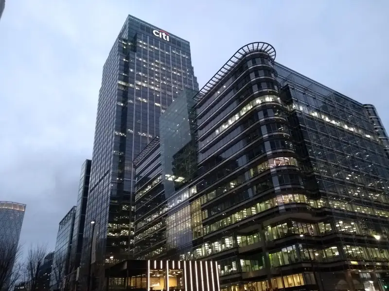
His trade was in short-term interest rate derivatives – financial instruments built on bets about where interest rates would go. He bet on the gulf between the interest rates other expected and the rock-bottom interest rates he was confident would last. And he won, year after year. For two years in a row, he was Citibank's top trader. He was betting that the world would remain broken, that inequality would persist and deepen, and that the poor would stay poor while governments kept borrowing cheap money to paper over the cracks. Year after year, his paycheck was proof of the very inequality he bet on, the reason his childhood friends' parents were unable to own their homes or feed their kids.
This was the purest expression of the Rees-Mogg dream: a working-class boy from Ilford had learnt the financial language, entered its institutions, and was now making millions by correctly predicting the suffering of people like his parents back home.
He wrote a book — The Trading Game — describing what he had seen and felt. It became a Liar's Poker for a new generation. But unlike Liar's Poker, Gary attempted a dianosis in his book of what was wrong with the financial system.
Stevenson's core argument was that wealth inequality is self-perpetuating, and leads to an economic death spiral. The wealthy have a lower marginal propensity to consume. As they get wealthier, they do not buy more consumer goods. They buy more assets, pushing up asset prices, and putting them out of ordinary people's reach.
William Rees-Mogg would have understood this argument perfectly. He had, after all, bet on exactly the same dynamic. He simply hadn't thought it was a problem.
~~~~~~~~~~~~~~~~~~~~~
But at the same time as Gary was at the LSE, another student called Peter Jaworski was taking a masters course called Philosophy and Public Policy.
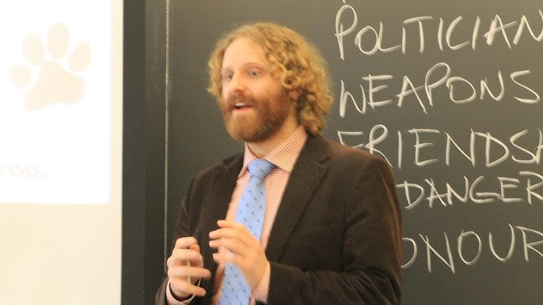
Hayek left the LSE in 1950. But the great Keynes-Hayek debate was still raging in classes. It wasn't really an argument between demand management and deflation. By the time Jaworski arrived on campus, the debate had embraced much wider concepts: the question of what kind of knowledge human beings can possess, and whether that knowledge can be centralised or must remain distributed. Long after both men were gone, that argument continued and made its way predictably from seminar rooms to assignments to policy papers, and eventually, to governments.
Burrowed away in the philosophy department, Jaworski was to stumble across a newer philosopher than Hayek with whom he was later to co-author a book that Liz Truss would take to bed with her while in government, just like Margaret Thatcher had done with The Road To Serfdom 40 years earlier. His name was Jason Brennan and together they would write Markets Without Limits, the book which is steadily replacing Hayek's economic vision with an even more extreme capitalist ideal.
After reading a small book called Why Not Socialism? by the Analytic Marxist philosopher G.A. Cohen, Jason Brennan made a name for himself by writing his own called Why Not Capitalism?.
Cohen's argument became one of the most influential works of political philosophy in the twenty-first century and he approaches it with a simple thought experiment about a camping trip. The campers share a common goal of everyone having a good time. They cooperate following norms of equality and reciprocity — contributing to the trip by voluntarily dividing tasks in a way that accounts for preferences, needs, and abilities. No one charges for their fishing catch. No one rents their fishing rod. They share the food, the work, and the shelter.
It was a beautiful argument. It captured something that the pure efficiency arguments for markets have always struggled against: the feeling that a world organised around mutual care is simply more human than one organised around exchange. Even people who reject socialism tend to feel it. It is the reason the word "community" retains such power in political rhetoric even from politicians who have spent their careers dismantling the things community requires.
In response, Brennan grants Cohen his premises and carries out the argument in a way that faithfully mirrors Cohen's own logic. His response is a parody, beginning with a thought experiment called the Mickey Mouse Clubhouse Village, in which Disney characters live together under capitalist principles of voluntary exchange, private property, and free markets, and are utterly content, generous, and fulfilled.
Brennan argues that Cohen is comparing an ideal socialist camping trip — with perfectly benevolent people — to a more realistic, flawed capitalism. If you apply the same degree of idealisation to both systems, capitalism wins. Even among saints, private property and free markets would be the best way to promote mutual cooperation and social justice. Libertarianism The problem is not the market. The problem is the people who use it badly.
Brennan's central claim: capitalism is not merely a compromise with selfish human nature, but is the superior system even for morally perfect beings. Even then, the price mechanism would allow for a more efficient and just distribution of goods and services than collective planning could achieve.
And this is where Brennan and Jaworski begin their larger project. If the market is not merely a necessary evil but is morally ideal — if it is, in Cohen's own terms, the better utopia — then the question of what the market should be permitted to touch needs to be completely reopened.
--------------
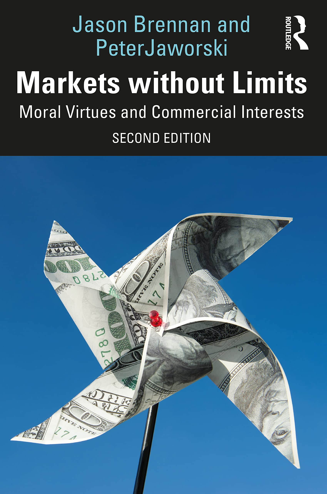
The opening questions of Markets without Limits are designed to be maximally uncomfortable: May you sell your vote? May you sell your kidney? May gay men pay surrogates to bear them children? May spouses pay each other to watch the kids, do the dishes, or have sex? Should we allow the rich to genetically engineer gifted, beautiful children? Should we allow betting markets on terrorist attacks and natural disasters?
Most people shudder. Brennan and Jaworski's argument is that the shudder is a philosophical error.
Their thesis is simple: if you may do it for free, you may do it for money. The market does not introduce wrongness where there was not any previously. There are no inherent limits to what can be bought and sold, but only restrictions on how we buy and sell.
This is a direct descendant of Hayek's argument about prices as compressed knowledge. In Hayek's version, the market aggregates information that no individual or government could possess. In Brennan and Jaworski's version, the market allocates goods and services that anti-commodification theorists would prefer to distribute through other mechanisms — charity, state provision, social obligation — which are always more inefficient and frequently more coercive. A kidney market would produce more kidneys. A market in refugee quotas would produce more refugee resettlements. Moral repugnance at the idea of a price being placed on these things is, in their argument, a luxury of the comfortable.
The review of Markets without Limits published in LSE's own student journal — the institution watching its own argument about itself continue across the decades — engages seriously with the book's strongest claim: that repugnance is not a problem of the market itself. The market does not transform what were permissible acts into impermissible acts. It does not introduce wrongness where there was not any already.
And this brings us back to the qualification we noticed Rees-Mogg making earlier. That economic transactions are not based upon force. That they are essentially peaceful in character. This is the maneuvre that merits Brennan and Jaworski's economic philosophy as an intellectual advance over Hayek's own, and it was anticipated by Rees-Mogg in the 80s.
The book was well received in the most influential libertarian policy networks of Washington and London. It was reviewed approvingly by the Cato Institute, praised at Georgetown and described as "a tour de force of philosophical argument that leaves the opponents' camp routed."
Crucially, somewhere in the chain of influence the idea began to circulate that this was the next frontier. The industries have all been privatised and libertarians hired at think tanks seemed no longer to serve a purpose. What Brennan and Jaworski's book ignited was the promise of privatising yet more sacred domains always hitherto considered beyond the market's reach, and the book was full to the brim with precise arguments powerful enough to fight the battle with.
~~~~~~~~~~~~~~~~
At the same time, another man was taking Hayek in a different direction. Peter Thiel, co-founder of PayPal, is a self-described libertarian. With a net worth of around $27.5 billion, he is one of the most powerful people in the world. And in 2014 he announced that The Sovereign Individual was among the most important books he had ever read. He wrote the foreword to the 2020 edition, championing it as a guide for life and insisting that the trends Rees-Mogg identified "are still at work today".
This was not an accident of biography. Thiel did not simply stumble upon Rees-Mogg's vision. He had been building the same vision independently — from different materials, but toward an almost identical destination.
In a 2009 essay, Thiel wrote "I no longer believe that freedom and democracy are compatible." The great task for libertarians, he argued, was to find an escape from politics in all its forms. The critical question becomes one of how to escape not via politics but through new technologies that may create a new space for freedom.
The three technologies he identified were: cyberspace, outer space, and seasteading — autonomous floating cities on the ocean, free from any government's jurisdiction. These were not whimsical fantasies. They were the logical endpoint of Hayek's original argument. If the market is the truest expression of individual knowledge and freedom, then the highest goal is to create spaces where markets can operate without political interference. Democracy, in this narrative, is a legacy system — bloated, inefficient, and easily captured by populist demands. Political equality interferes with market discipline.
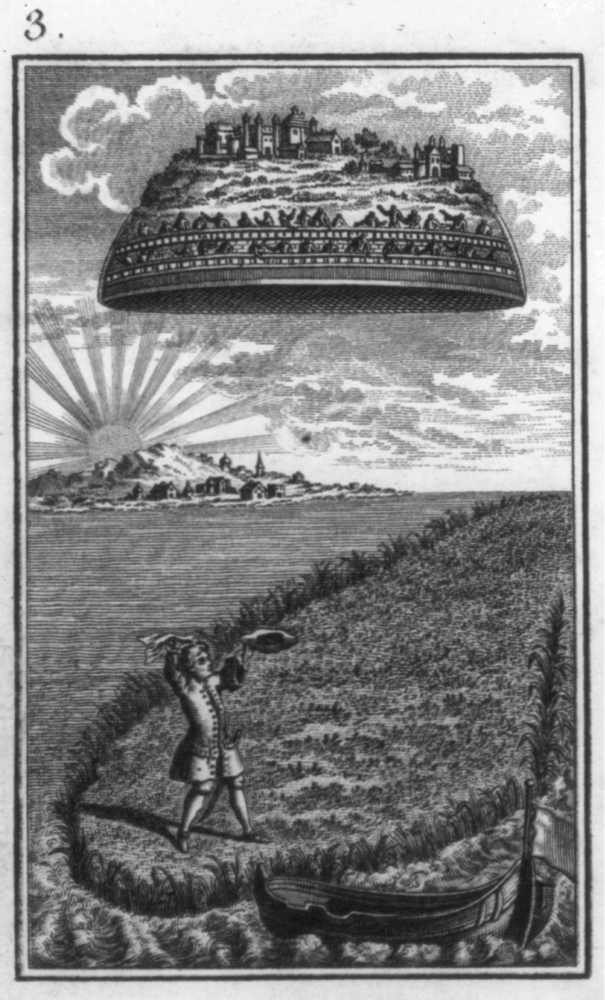
Thiel envisions control through code and capital — privatised, with tech billionaires, not party officials, as the architects of order. His is a program in which the crowd is driven by envy and hysteria. The founder, by contrast, sees clearly. Shielded from collective pressures and accountability structures, he alone can transcend destructive rivalries and act on definite truths.
This is Hayek's argument in its most extreme form. But where Hayek believed in the distributed wisdom of millions of individual market actors, Thiel believes in the superior wisdom of exceptional individuals — the founders, the visionaries, the people who see what others cannot. It is Hayek with an aristocracy restored inside it. The market is good, but only the right people know how to read the market.
Then crucially, Thiel co-founded Palantir Technologies in 2003, the data analytics company which is now central to US and UK intelligence apparatuses. Palantir replaces human judgment with pattern recognition and automated suspicion, and then sells this to immigration enforcement and military intelligence. The man who wrote about escaping the state built one of the state's most powerful tools. The sovereign individual, it turned out, needed a very large surveillance contract.
But there was one more element to the project. It needed a philosophical rationale to justify it.
---------------
To understand what Thiel did next, you have to understand derivatives.
A derivative is a financial instrument whose value is derived from something else — a currency, a commodity, a stock, a bond, or, increasingly, an event. In the 1980s, derivatives were exotic tools used by institutional investors to hedge risk or, more often, to take enormous speculative positions on the direction of markets.
The book Traders, Guns & Money, K. Satyajit Das's darkly comic masterpiece of financial anthropology, described derivatives trading as a kind of shadow world that had grown up inside the official economy, in which enormous complexity was used primarily to obscure what was actually happening. Banks were betting with other people's money, taking large fees for products that almost nobody understood, and building structures of such dazzling intricacy that when they collapsed in 2008, even the people who built them didn't fully know why.
The 2008 crash was, among other things, the moment when derivatives escaped from the shadow world and became a matter of public attention. Mortgage-backed securities, credit default swaps, collateralised debt obligations. Suddenly everyone was using this vocabulary, even if few understood it. What had been the private game of institutions and traders was revealed to have been determining the fate of millions of people who had never heard of it.
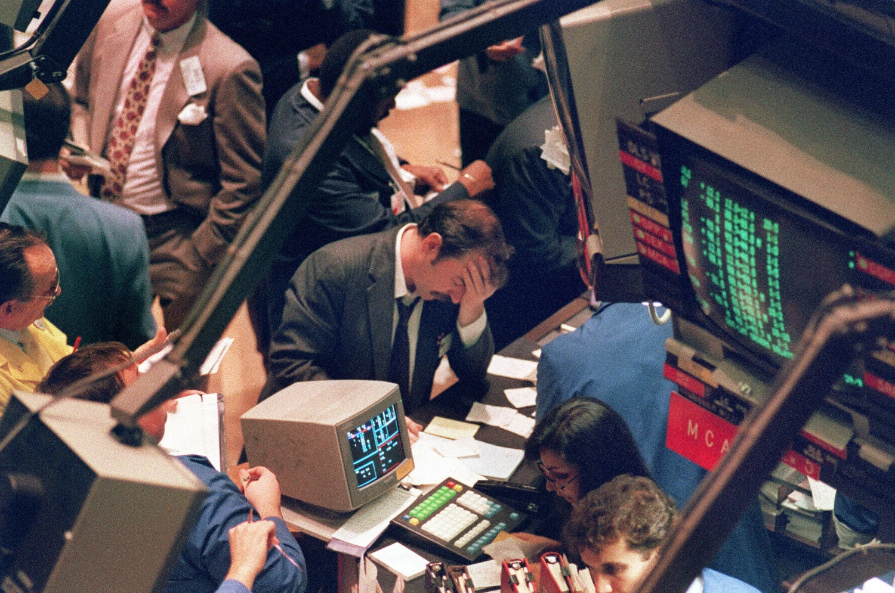
There was a strange irony here. The instruments were enormously sophisticated. But what they were, at their core, was remarkably simple: they were bets. Bets on prices. Bets on defaults. Bets on whether people would pay back their mortgages.
Someone, somewhere, looked at all this and thought: if betting on financial events can generate these kinds of returns, why limit it to financial events?
For both Gary Stevenson and Peter Thiel, the 2008 financial crisis served as a pivotal moment that validated their specific worldviews, though it led them in radically different directions — Stevenson toward economic activism and Thiel toward concentrated venture capital and contrarianism.
While most traders expected a "V-shaped" recovery, Stevenson bet on long-term decay. He reasoned that because wealth was concentrated at the top, ordinary people wouldn't have the money to spend the economy back to health. He correctly predicted that interest rates would stay near zero for years to keep the system afloat, making him Citibank’s most profitable trader globally in 2011.
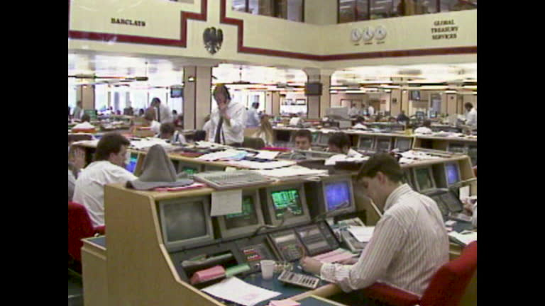
But that same year Stevenson was feeling burnt out and disillusioned, realising his wealth was directly tied to the continual collapse of the global economy. When he tried to quit, Citibank offered a transfer to Tokyo in 2012, hoping a change of scenery would retain their top talent. He worked on the Short Term Interest Rate Trading (STIRT) desk at Citibank in London and Tokyo between 2011 and 2014 where he specialised in using complex derivatives to bet on long-term wealth inequality, correctly predicting that it would keep global interest rates low for years following the 2008 financial crisis.
Unlike Stevenson, Thiel had already left the trading floor long before 2008, but the crash profoundly shaped his second act as a billionaire venture capitalist.
Thiel worked at Credit Suisse Financial Products from 1993 to 1996 as a currency options and derivatives trader. He described this experience as foundational, teaching him how to evaluate the future value of complex, abstract assets – a skill he applied to early-stage tech investing.
In the years leading up to the crash, Thiel’s hedge fund, Clarium Capital, grew to billions by betting on a housing bubble and a 'peak oil' scenario.
The 2008 crash confirmed Thiel’s "stagnation thesis"—the idea that, outside of bits (computers), real-world progress (atoms) had stalled since the 1970s.
While the crash initially boosted Clarium’s returns, Thiel eventually pivoted toward concentrated venture capital (Founders Fund), arguing that in a world of financial instability, the only way to create real value was through 'monopoly' businesses that solve fundamental technical problems.
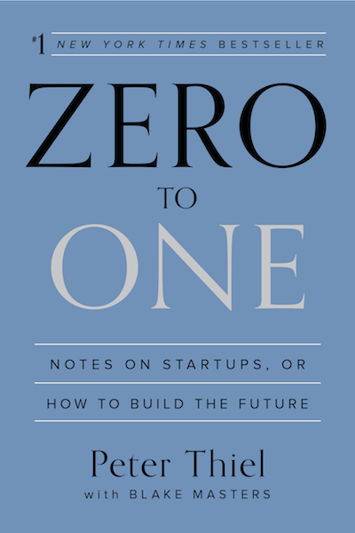
To understand what he means by monopoly businesses, his book Zero to One gives some insight. Thiel argues that "capitalism and competition are opposites" and classifies businesses into two types:
1. Perfect Competition: Industries like restaurants where many firms compete, profit margins are thin, and companies focus on survival rather than innovation.
2. Creative Monopoly: Companies that create something entirely new (going from "0 to 1"). Because they have no competition, they can capture the value they create, leading to high profits that can be reinvested into long-term, world-changing projects.
For Thiel, a monopoly like Google is good because its dominance is the result of being significantly better than its rivals, rather than through government-granted privilege.
And this is where his libertarianism gets weird. Thiel argues that as democracy expands (specifically citing women's suffrage and the welfare state), the "masses" use their vote to demand wealth redistribution and regulation. He views these as "taxes on innovation" that prevent the "great men" of history from building monopolies and driving progress. He compares successful startup founders to "benign dictators". He believes progress happens through the singular vision of an elite individual, not through the "messy" compromises of democratic debate, which he sees as inefficient.
Palentir embodies this fusion of monopoly power and anti-democratic sentiment perfectly, representing a vision of a techno-authoritarian future where private engineers, rather than elected officials, shape public behavior and state control.
But if you're starting to wonder how this counts any longer as libertarian, this is where it becomes even stranger. Because it turns out this is exactly what Hayek had written in his later works long before. Hayek, the paragon of libertarian political philosophy and economics, was himself anti-democratic.
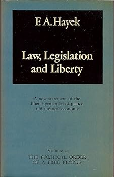
Hayek proposed a 'Model Constitution' in his book Law, Legislation and Liberty published in 1979. He and Thiel shared a deep suspicion that modern, unlimited democracy inevitably leads to the erosion of freedom through wealth redistribution and special-interest 'rent-seeking.'
His solution was to split the government into two separate assemblies with very different functions:
1. The Legislative Assembly would be solely responsible for defining the "general rules of just conduct" (universal laws). To insulate them from the pressures of daily politics and "bribery" by special interest groups, Hayek proposed a specific, restricted membership:
- Selection: Members would be elected for 15-year terms (not 10, but close to your recollection).
- Age Restraint: Only people between the ages of 45 and 60 would be eligiblhae for election.
- Term Limits: Once their 15-year term was up, they would never be eligible for re-election again, ensuring they weren't motivated by staying in power.
- "The Club": They would be chosen by an electorate of their peers—meaning only people of the same age (e.g., 45-year-olds) would vote for that year's representative.
2. The Governmental Assembly would be a separate, traditionally elected body would handle the day-to-day administration and "policy" (like building roads), but it would have no power to change the fundamental laws set by the elite Legislative Assembly.
Thiel's view about the 'dictator founder' sounds remarkably like Hayek's comment in 1981 that he would prefer a "liberal dictator to a democratic government lacking in liberalism." Similarly, Hayek's 15-year assembly and Thiel's interest in seasteading or corporate 'sovereign' enclaves are both attempts to depoliticise the law and create a 'shield' around the elite so they can govern according to long-term principles rather than short-term voter demands.
Finally, both argue that if the general public has the power to vote on anything and everything, they will eventually vote to "plunder" the wealthy and stifle the "creative monopolies" that drive progress.
But a key difference remains: Hayek still framed his proposal as a way to save democracy from itself by placing it within a rigid framework of the Rule of Law. Thiel, by contrast, has largely abandoned the term "democracy" entirely in favor of "freedom," which he defines as capitalism unburdened by any state interference.
Thiel is not alone. Two recent works of philosophy are worth mentioning here. First up is 10% Less Democracy: Why You Should Trust Elites a Little More and the Masses a Little Less by Garett Jones. And secondly, we have Big Business: A Love Letter to an American Anti-Hero by Tyler Cowen.
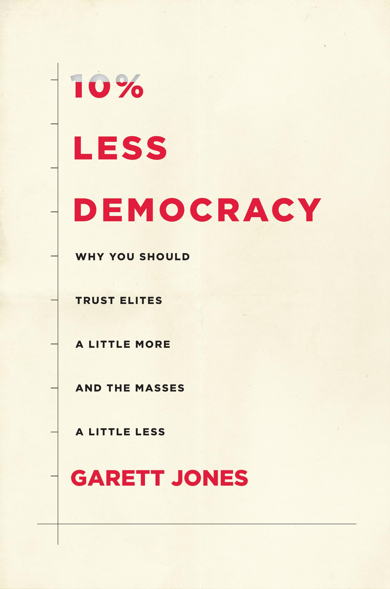
Catch their titles? Well get this. Those two books were required reading for the course Jaworski studied at LSE, MSc Philosophy and Public Policy. I know this because I studied the same course several years after him. This is the philosophy they're pushing at LSE now. Hayek is considered too tame these days.
-----------
Somewhere in the space between Hayek's vision of distributed knowledge and Rees-Mogg's principle for profiting from catastrophe brings us to Polymarket. Founded in 2020 by Thiel, by the mid-2020s it had become the world's largest prediction market.
It describes itself as a place where users can "stay informed and profit from their knowledge by trading on things related to breaking news, politics, sports, elections, crypto, finance, tech, culture."
The mechanics are simple. Each market is a yes/no question. You buy shares in "yes" or "no" outcomes. Prices reflect crowd-sourced odds and probabilities. If yes is at 30 cents, that's a 30% chance.
What this means in practice is that you can bet on anything. Fancy a gamble on how many times Elon Musk will tweet today? Polymarket will let you. Perhaps you'd like to bet on when the US and Iran will reach a peace agreement? There's a market for that too. How about the chance that the second coming of Jesus Christ will occur before 2027? Polymarket currently estimates a 4% chance, and $57m is on the line already.
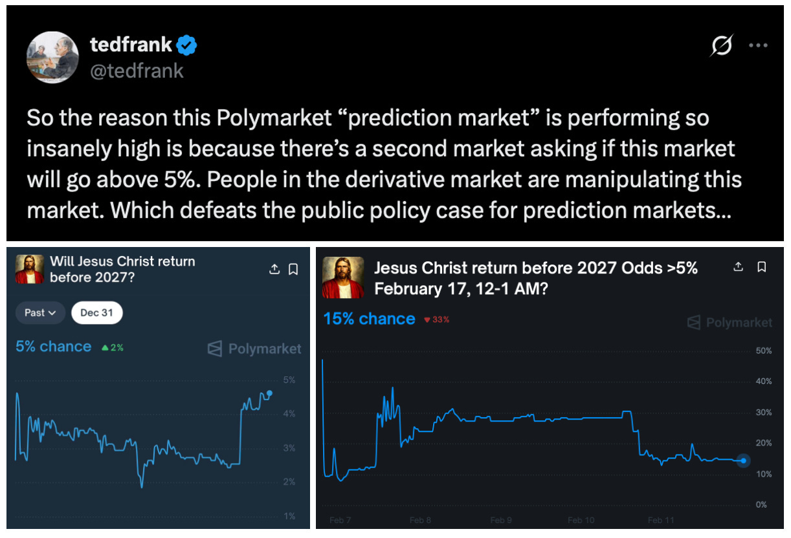
It is the real life application of Brennan and Jaworski's philosophical project. Nothing is off limits on Polymarket. In Markets without Limits, they ask "Should we allow betting markets on terrorist attacks and natural disasters?". The answer, in their framework, is yes – so long as we can design the market correctly. The prediction market does not create the terrorist attack. It merely prices the probability of one. And in pricing it, it may produce information that would otherwise not exist.
In this sense, Polymarket is an instrument of epistemology. It is a machine for discovering truth through the aggregation of self-interested prediction.
And the man who brought this into existence is the Sovereign Individual, made flesh. His first job out of Stanford was trading derivatives at Credit Suisse, pricing the future of money, in exactly the way that Polymarket now allows anyone to do.
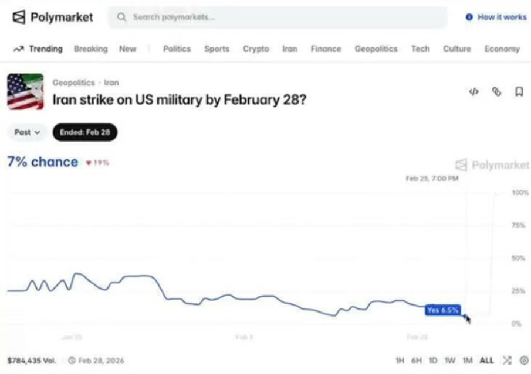
Rees-Mogg had argued that digital technology will render democratic states obsolete, allowing wealthy individuals to exit from collective obligations. As blockchain, encryption and digital currencies mature, so too will the ability of elites to evade taxation, regulation and redistribution. Here Thiel is putting this into practice.
One might wonder at this stage, just how can this be anti-democratic? Hasn't Thiel democratised the derivatives markets which before were only accessible to a small elite? But that would be a strange move for a self-described anti-democrat with acerbic views toward the masses. And the person who best understands the logic of all of this is Gary Stevenson.
Stevenson believed that the markets are rigged. He was able to make so much money only because of the enormous capital his firm had that enabled him to make millions off of tiny movements in the markets. That kind of leverage simply isn't available to individuals, so the playing field is set up unequally.
The same is true of Polymarket. Only rich people can afford to lose the amount of money you need to put into a bet if you're going to make much from winning. And someone with that much money isn't then putting that money back into any economy you have access to so you won't benefit from them having more money. They will go spend that in their expensive neighborhood in a supermarket you can't afford to shop at. So your supermarket does no better as a result of their winnings.

This is the logic which Gary outlined in The Trading Game and he has been campaigning for a wealth tax ever since.
The direction Gary went after his experience of the derivatives trading desk in Tokyo is markedly different to that of Thiel. It is human and refreshing to see someone emerge from the strange institutions we, like young Gary, see in glass towers on the horizon, and blow the whistle on what he thinks the problem is. This is especially important given the bribery he records facing after he expressed his desire to leave the company, being told he unfortunately made too much money for the bank to be allowed to go.
I met Gary while working at the independent bookshop in LSE. He asked me to show him how the daily chess puzzle worked which was cool and surprising he didn't know already. But perhaps he did. One thing he told me he is being accused of which he finds especially ridiculous is the speculation that, because his former bosses warned they would destroy him if he spoke out, his activism is really a careful PR operation by the banks themselves to convice the public this is what happens to you if you dissent. Gary's allowed to speak out, they think, because he makes the banking system look like an unbeatable, all-knowing force that discourages more revolutionary thought at a time when the banks are secretly weak and vulnerable.
This has similarities with my interpretation of the Chomsky-Epstein association. The elites fund their enemies and provide them with public platforms to be heard, but then make it known that this is what they are doing and it causes disillusionment and confusion amongst the public. No one can understand why and what this leaves them with is a feeling that the system is harder to comprehend than they originally thought, stifling motivation to continue protesting and resist.
Others argue Stevenson's singular focus on a 2% wealth tax on the super-rich is a moderate and sanitised form of dissent. Richard Murphy described the wealth tax as "hot air" because it is notoriously difficult to implement and lacks a concrete plan. The theory here is that by leading the public toward a high-profile but potentially unworkable policy, he acts as a safety valve, venting public anger into a political dead-end while the core banking system remains safe.
By positioning himself as the bank's enemy, he gains credibility with the left that a traditional economist never could. Character assassinations by outlets like the Financial Times only serve to boost his 'outsider' status. By building this reputation, it allows him to steer the conversation toward 'taxing individuals' and away from 'reforming the banking system itself,' which is a far bigger threat to the institutions he supposedly left behind.
This could be entirely unfair. It's all specualtion. But sowing the seeds of doubt is very clever. It has the effect of paralysing collectives. Meanwhile, Gary has a compelling personal narrative about inequality, sold to an audience that watches him on their phones while the system he describes continues to operate exactly as he said it would.
And if he isn't undercover for the banks, the story of the 'trader with a conscience' is still the perfect media product for selling his book. In other words, the market still has its ways to absorb him yet.
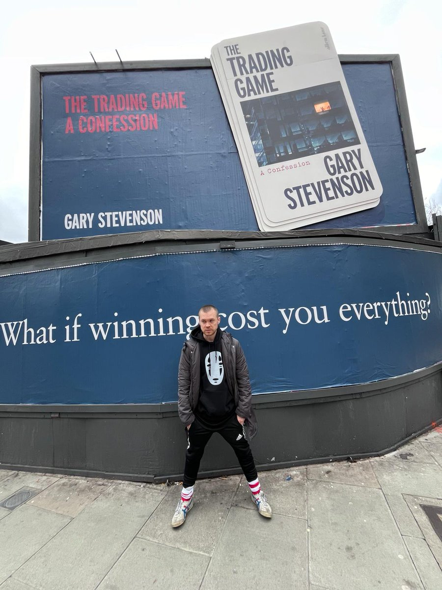
I'm not sure whether or not Gary is playing a complex game...
...But I am certain without even looking that there's a way to bet on it on Polymarket.
And there is also a Polymarket bet on which Ukrainian city will be taken next. Thousands of people, scattered across the world, are poring over satellite imagery, reading intercepted communications, arguing about troop movements, motivated entirely by the possibility of financial gain. In doing so, they may be producing the most accurate real-time map of the front that exists.
William Rees-Mogg, had he lived to see it, would have called this proof that the market knows best.
And if Gary Stevenson isn't a secret insider, he would do well to reply that none of the people suffering in the city in question are getting a percentage of the winnings.